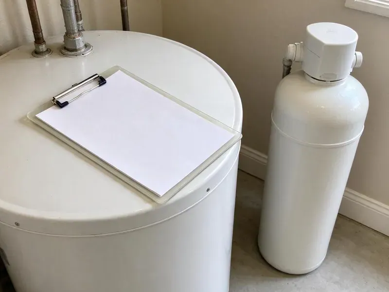

Basement Leak Repair in Janesville, WI
Don't let basement leaks compromise your home's foundation. Our Janesville, WI team offers quick and effective solutions for all types of basement water intrusion.
- Long-Lasting Repairs
- Skilled Foundation Care
- Lasting Repairs
- Licensed and Insured
Your Solution for Basement Leaks in Janesville, WI.
We repair the leak, test the fix and tell you plainly what it will take to keep the space dry.
Trusted Basement Leak Repair Services for Janesville, WI Homeowners
HKV Plumbing focuses on comprehensive basement leak repair for homes across Wisconsin. Shifting soil and heavy rain can leave basements in Janesville vulnerable to hydrostatic pressure and foundation cracks, leading to significant water intrusion. Glacial soils in Wisconsin range from heavy clay to sand and gravel, which affects how water moves around foundations and buried lines.
Our expertise includes:
- Sump pump, floor drain and backwater valve installation and repair
- Advanced Leak Detection Technology
- Sump Pump Installation & Repair

Additional Plumbing Maintenance Services in Janesville, WI
Our maintenance and specialty plumbing services in Janesville, WI protect your home year-round and extend the life of every system.


Customers
Why Choose HKV Plumbing for Basement Leak Repair in Janesville, WI?
Basement water is tricky because a plumbing leak, a condensation problem and soil seepage can look identical on the floor. We test before we cut, so you pay to fix the right problem.
- Diagnosis First, We verify the water source with meters, dye tests and pressure tests before any repair.
- Lasting Fixes, We address the cause, such as a failed fitting or poor drainage, so the leak does not return.
- Clean Repairs, We protect finished floors and walls and open only what we need to access the pipe.
Citywide Coverage
HKV Plumbing proudly serves every neighborhood of Janesville for all basement leak repair needs. Whether you are in a historic district or a newer subdivision, our local teams are equipped to respond fast.
Experienced Team
Our plumbers have repaired basement leaks behind drywall, under slab floors and inside crawl access points. They know how to read water stains and efflorescence to tell old seepage from an ongoing leak.
Safety-First Approach
Standing water in a basement can reach outlets, water heaters and furnace components, so we check for electrical hazards before we work. All repairs meet the plumbing code used in your city or county.
Trusted Certified Janesville Plumbing Services Professionals
At HKV Plumbing, we take pride in providing licensed, certified plumbing services throughout Janesville, WI. Backed by leading industry credentials, our experienced plumbers combine technical skill with genuine customer care. Whether it is repair, installation, or maintenance, we follow strict safety and quality standards to deliver long-lasting results you can trust.
Call Us Now PHCC Plumbing Contractor Recognition
PHCC Plumbing Contractor Recognition Better Business Bureau (BBB) Accreditation
Better Business Bureau (BBB) Accreditation Angi Certified Pro
Angi Certified Pro ISO 9001 Quality Management Certification
ISO 9001 Quality Management CertificationLasting Basement Leak Repair Services in Janesville, WI
Water Damage Assessment in Janesville, WI
Before any repair, our team conducts a thorough water damage assessment to identify the source and extent of your basement leak. This includes inspecting for mold growth, structural concerns, and damaged finishes. Our comprehensive approach ensures that all related issues are addressed for a full restoration of your Janesville basement.

Wall and Slab Seepage Repair in Janesville
When water enters through foundation walls or the slab joint, the cause is usually surface water pooling against the house. Glacial soils in Wisconsin range from heavy clay to sand and gravel, which affects how water moves around foundations and buried lines. Dense or saturated soil can hold water near the foundation instead of letting it drain away. We seal penetrations where pipes pass through the wall and can install interior drain channels that carry seepage to a sump. We also suggest grading and gutter changes when outside water is the root cause.
Basement Leak Repair Cost Comparison in Janesville, WI
A simple fitting or supply line repair usually costs $200 to $600. Drain stack repairs run $500 to $2,500 depending on access and pipe material. A new sump pump installed typically costs $600 to $1,800, while interior drain channels and full seepage systems can run several thousand dollars. We explain each option in writing so you can compare the fix against the risk.
Wall Leak Solutions in Janesville, WI
Beyond foundation cracks, we address leaks coming from basement walls due to porous concrete or masonry. Our methods include applying waterproof coatings and sealants that create a tough barrier against moisture. We also inspect for exterior drainage issues that might contribute to wall saturation, offering comprehensive solutions for your Janesville home.
Drain and Sewer Pipe Leak Repair in Janesville, WI
Cast iron drain stacks in older homes crack and scale with age, and plastic joints can separate if a line was poorly supported. These leaks usually show up only when an upstairs fixture runs. We run water through each drain while watching the basement, then confirm the crack with a camera. Repairs range from a single section swap to replacing an entire stack with PVC or ABS.
Interior Drainage Systems in Janesville
When exterior excavation isn't practical, interior drainage systems provide an effective solution for managing basement leaks. We install perimeter drains along the basement walls, collecting water before it can surface and directing it to a sump pump for removal. This system is less disruptive and can be a cost-effective way to dry out a wet basement.
Floor Drain and Backwater Valve Repair in Janesville
A basement floor drain that backs up during heavy use or a storm usually points to a blockage or a failed trap. We clear the drain, check the line to the main sewer and replace cracked traps and covers. Installing a backwater valve stops sewage from pushing back into the basement if the main line surcharges. We set the valve where it can be serviced without trouble.

Supply Line Leak Repair in Janesville
Water lines that run along basement ceilings and walls can leak at fittings, valves or pinholes. Private wells serve a large number of rural homes, and some Wisconsin well water carries iron, nitrates or bacteria that require regular testing. Water chemistry affects how fast copper corrodes, and older galvanized lines often rust from the inside. We locate the leak, replace the damaged section with copper or PEX and pressure test the repair. If the line shows widespread wear, we will tell you whether a partial repipe makes more sense.
Basement Leak Repair Near Me in Janesville, WI
When you search for basement leak repair near me in Janesville, WI, HKV Plumbing is your trusted local expert. We are very familiar with the local soil conditions, weather patterns, and common building practices that influence basement integrity in this area. Our proximity means faster response times and local expertise.
Choosing a local expert like HKV Plumbing means you get a team familiar with Janesville's plumbing and foundation needs. We're your neighbors, committed to providing quality basement leak repair solutions right here in your community.
HKV Plumbing at a Glance
- Fully licensed plumbing team covering Janesville, WI
- Same-day appointments and 24/7 emergency response
- Upfront, flat-rate pricing before work begins
- 4.8-star rated by 448+ Wisconsin customers
Janesville Map
Janesville Information
- Population
- 66,102
- Area codes
- 608/920/815
- Service area
- Janesville and communities within 40 miles
- Nearby
- Madison, Waukesha, West Allis, Wauwatosa
Basement leak repair is especially important for homes in Janesville, WI, where soil movement and storm water can exert significant pressure on foundations, leading to cracks and water intrusion. Rising groundwater in wet seasons can push water through basement walls and floors, putting extra load on drainage systems.
Expert Services
Trust our professionals for reliable HKV Plumbing solutions in Janesville, WI.
Our Specialized Plumbing Services in Janesville, WI
At HKV Plumbing, we provide a complete range of plumbing services across Janesville, WI. From leak detection to full system installations, our team ensures fast, precise, and affordable service for both residential and commercial properties. Explore our core services below:


How Our Basement Leak Repair Process Works in Janesville, WI
Every basement leak job starts with testing, so the repair you pay for is the one that solves the problem.
Request a Quote
Contact HKV Plumbing at (414) 432-4641 to schedule an initial consultation. We will gather information about your basement leak and arrange for a convenient on-site inspection.
Thorough Inspection
Our technicians will visit your property to identify the source of the leak, assess the extent of the damage, and recommend the most effective repair strategy. We use advanced diagnostic tools to improve accuracy.
Customized Repair Plan
Based on our findings, we will present a detailed repair plan and a transparent estimate. We explain all options and answer your questions, making sure you understand the proposed solutions.
Frequently Asked Questions About Basement Leak Repair in Janesville
Most basement plumbing leak repairs in Janesville cost $200 to $1,500, depending on the pipe and how hard it is to reach. Sump pump replacements run $600 to $1,800, and full interior drainage systems cost more. We give you a written price before work starts.
Exterior waterproofing solutions, such as installing a perimeter drain or applying an exterior membrane, do require excavation around the foundation of your house. However, interior drainage systems or crack injections typically do not. We will assess your specific situation in Janesville and recommend the least invasive yet most effective approach.
Small repairs usually do not need a permit, but replacing drain stacks, adding a sump discharge or installing new fixtures may. Requirements vary by city and county. We handle any permits your project needs.
Yes. A small drip behind finished walls can rot framing, ruin flooring and grow mold within weeks. Catching it early keeps the repair small and the cost down.
Heavy storms dump a lot of water quickly, and the soil around the foundation cannot absorb it fast enough. Rising groundwater in wet seasons can force water through basement walls and floors, putting extra load on drainage systems. The water then pushes through wall joints, cracks and pipe penetrations. Better grading, gutters and a sump system often solve it.
Yes, HKV Plumbing stands behind the quality of our work. We offer comprehensive warranties on our basement leak repair services, with specific terms depending on the type of repair and materials used. We'll discuss the warranty details with you during your service agreement.
While some very minor, surface leaks might be temporarily patched with DIY products, most basement leaks indicate a deeper issue, often related to the foundation or hydrostatic pressure. Professional plumbers like HKV Plumbing have the expertise and specialized equipment to accurately diagnose and provide a lasting solution. Glacial soils in Wisconsin range from heavy clay to sand and gravel, which affects how water moves around foundations and buried lines.
Most supply and drain repairs are finished in a few hours. Sump installations take most of a day, and interior drainage systems can take two to four days. We give you a timeline along with your quote.
What People Are Saying About Our Plumbing Experts?

Emily R.
I called HKV Plumbing for plumbing repair, and the technician was fast, polite, and thorough. They explained the problem clearly and fixed it the same day. I will definitely hire them again. Highly recommended!
Plumbing Repair · Waukesha, WI
Patricia H.
We had a slab leak that two other companies could not find. HKV Plumbing located it in under an hour, explained our options, and the price matched the quote to the dollar.
Slab Leak Repair · West Allis, WI
Daniel K.
A pipe burst at 11 pm and they actually answered. The plumber showed up within the hour, shut everything down, and had us back to normal the next morning. Could not ask for more.
Emergency Plumbing · Janesville, WI
Robert G.
The trenchless sewer replacement saved our front yard. They walked us through the camera inspection footage first so we knew exactly what we were paying for.
Sewer Line Replacement · Madison, WI
Sofia M.
Two new toilets installed in one visit, no mess left behind, and the tech even adjusted a faucet he noticed was dripping. Fair pricing and really friendly.
Toilet Installation · Milwaukee, WI
Mark T.
When our office needed drain cleaning, HKV Plumbing provided quick, reliable service. The plumber arrived on time and made sure every drain flowed perfectly before leaving. Very satisfied.
Drain Cleaning · Waukesha, WI